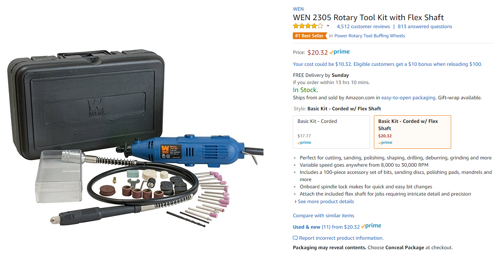
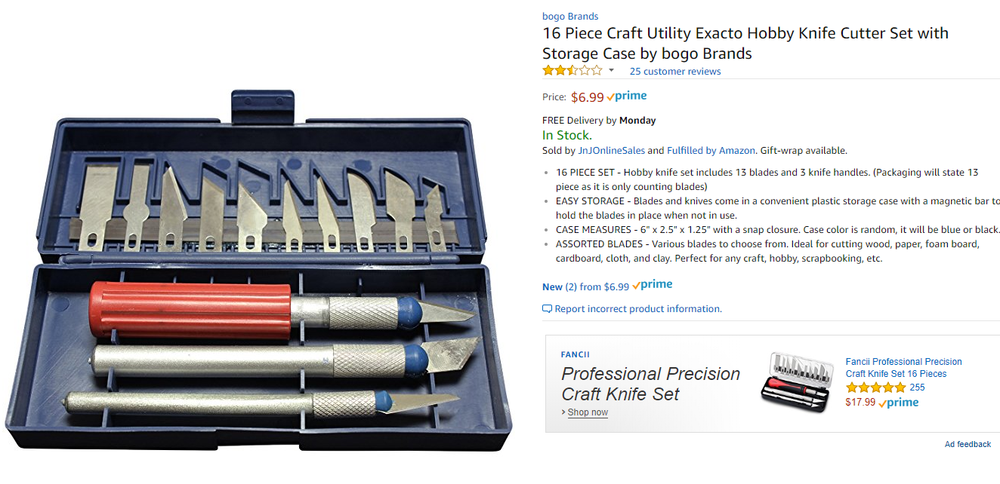

Tips To Cut Down the Cost
Cosplay can be an expensive hobby. It is important to think about purchasing supplies as an investment. Once you’ve bought your glue, paint, and other items you will be able to continue using them for other cosplays.
The first thing you need to worry about purchasing is the EVA foam. There is special EVA foam specifically made for cosplay, but there is a cheaper alternative to this. Exercise mats are made from EVA foam and are a common replacement. While one sheet of professional EVA foam can cost you 10 dollars, you can purchase 5 times that amount if you buy exercise mats.
The next big cost is glue. Most cosplayers use Contact cement. I personally prefer this type of glue, but many people will use hot glue. It is more difficult to work with, but work quickly with it and you’ll be just fine.
Paint can really cause your wallet to dry up. The Plastic Dip can be substituted with Elmer’s glue though! Instead pf spray painting your piece apply numerous layers of watered down Elmer’s glue to seal it. Acrylics can be bought cheaply. It is okay to use a cheaper brand, but it might take multiple coats.
The tools use to make cosplay usually consist of a heat gun, Dremel tool, and various blades. You will need to invest in blades and a Dremel tool, but you can forgo the heat gun. On Amazon you can purchase these items cheaply.
In total I was able to make a prop gun with roughly a hundred dollars, but I will be able to reuse all these items to make more pieces.


By Rachel Stumme